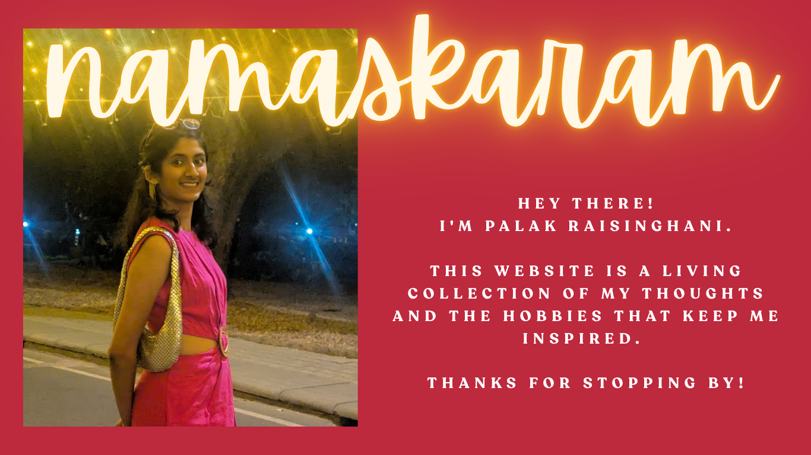
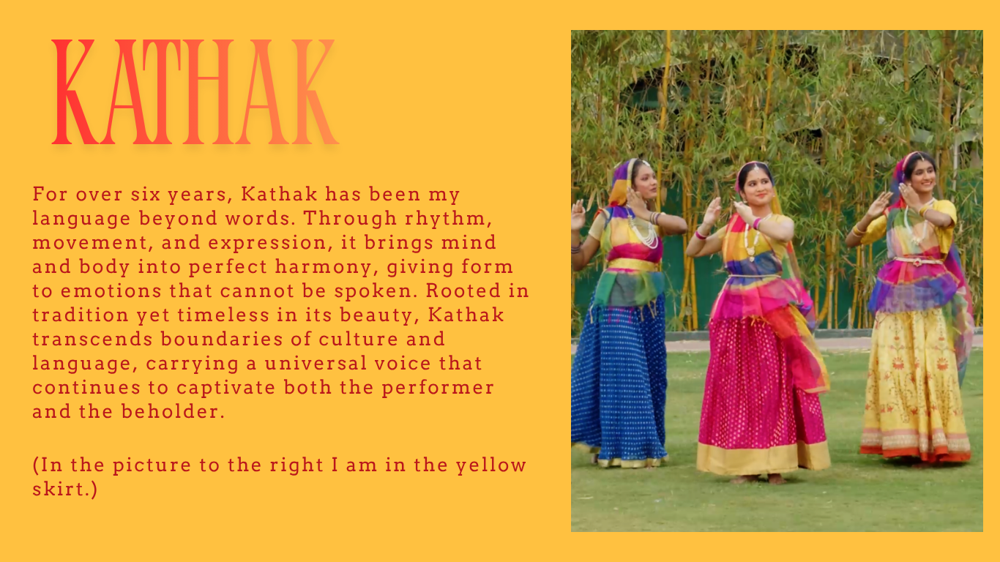
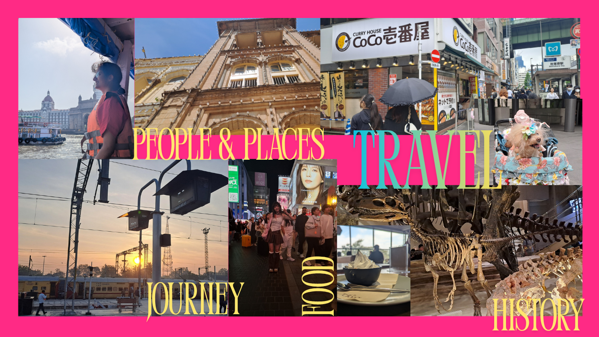
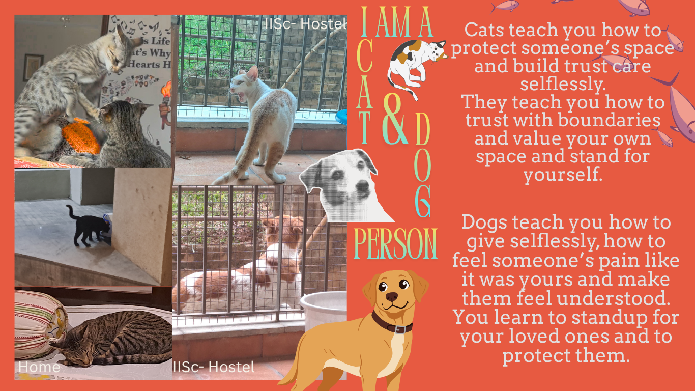
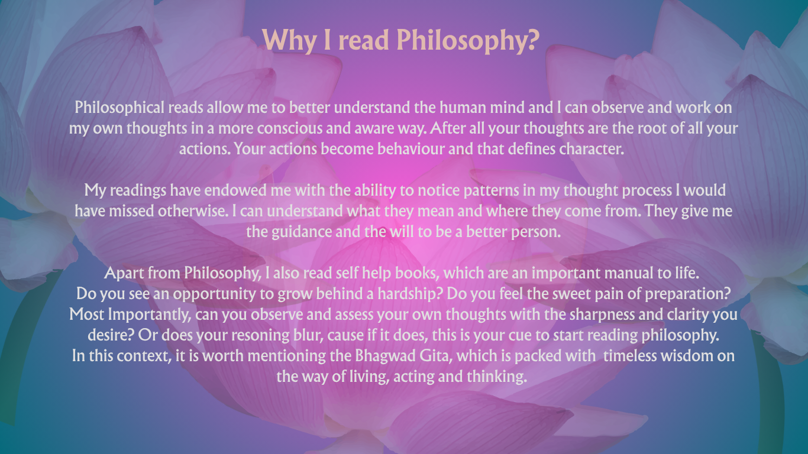

I am someone who finds meaning in the spaces between things — between silence and sound, stillness and motion, the ancient and the brand new. My life is a collage of everything that has ever moved me.
I ask big questions and let them travel with me. From the streets of a new city to the inside of a museum, from a yoga mat to a dance floor — I carry curiosity the way others carry keys.



"The purpose of art is washing the dust of daily life off our souls." — Pablo Picasso

Dance is where I turn movement into language. It keeps me responsive, expressive, and fully present, whether I am rehearsing choreography or just letting music guide the moment.